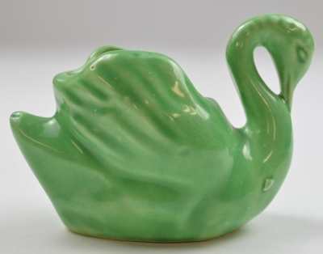
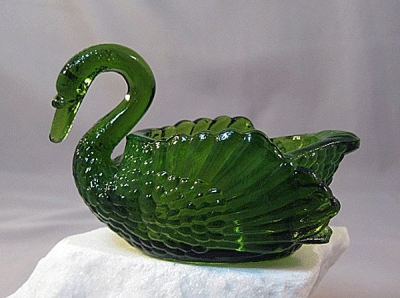
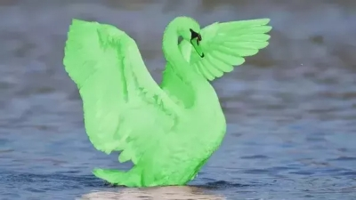
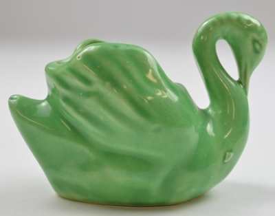
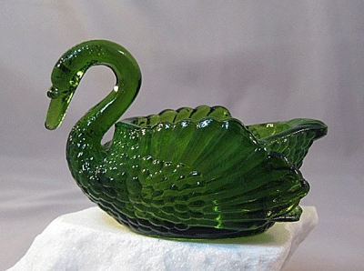
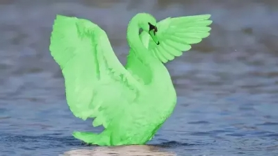
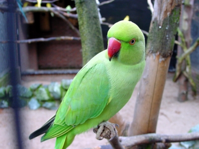

Dado que conocemos tan poco del universo, ¿cómo podemos tener la absoluta certeza de que Dios no existe?
¿Cuántas veces nos encontramos con esta pregunta (o una variación de la misma)?
Yo siempre que me la encuentro respondo trayendo a colación a unas simpáticas aves palmípedas: los cisnes verdes.
La cosa es así: Sabemos, gracias a cientos de años de observar cisnes, tanto en la naturaleza como en cautiverio, que el plumaje de estas aves es o blanco o negro o combinaciones de estos dos colores. Nunca nadie vio a un cisne verde.
También sabemos que los cisnes habitan naturalmente desde las regiones polares a las templadas. Nunca se han visto cisnes en zonas tropicales.
Por eso podemos tener la certeza de que el próximo cisne que nos crucemos va a ser o blanco o negro o una combinación de estos dos colores y que la posibilidad de encontrar un cisne de cualquier color en, digamos, la selva del Amazonas es muy baja.
Es por todo esto que sabemos acerca de los cisnes que no estamos abiertos a encontrarnos a un cisne verde en el futuro cercano.
Los cisnes verdes están descartados de plano porque tenemos suficiente certeza de su inexistencia.
Podemos no tener absoluto conocimiento del por qué de la coloración de los cisnes, podemos no tener el absoluto conocimiento de cada cisne individual, podemos no conocer absolutamente todas las especies de cisnes, pero aún así podemos tener la certeza de que no hay cisnes verdes, excepto como seres imaginarios o hipotéticos.
Sin embargo, pese a que la única posición racional ante los cisnes verdes es suponer su inexistencia hasta que se demuestre lo contrario, existen personas que insisten en sostener la posibilidad de la existencia de los cisnes verdes. Y cuando uno les pide evidencia a los verdecisneanos de la existencia de estos elusivos ánades, nos muestran cosas como estas:
 
–¡Ey!– uno dice Pero estos son cisnes verdes hechos por el hombre (y el último es un retoque pedorro en Photoshop)! ¡Esos no son verdaderos cisnes verdes!
–¡Oh, vos y tu mente cerrada! Estas son metáforas de los verdaderos cisnes verdes –te responden–. Tenés que tener la mente abierta… Los cisnes verdes podrían verse así:
–Pero… ¡eso es un loro!
–Te estás ciñendo a categorías humanas. Abrí tu mente. Loros y cisnes son sólo palabras, tenés que ver más allá de ellas y considerar la existencia de las plumas verdes.
–No hay problema. Las plumas verdes existen.
–Y no podés negar que los cisnes existen.
–No, por supuesto que no.
–O sea, ¡admitís que los cisnes verdes existen!
–¡No, no, pará! ¡Yo nunca dije eso!
–Pero si los cisnes existen y las plumas verdes existen, no podés descartar tan tajantemente la existencia de cisnes verdes.
–Hasta ahora no hay evidencia de la existencia de los cisnes verdes y toda la información que tenemos acerca de los cisnes verdaderamente existentes apunta a que los cisnes verdes son solo producto de la imaginación humana.
–La teoría de la relatividad es también producto de la imaginación humana. ¿Estás diciendo que todo lo que propuso Einstein es mentira?
–No, no, yo no dije eso.
–Entonces tenés que admitir que es posible que los cisnes verdes existan.
Y así ad infinitum o, más probablemente, ad momentum que nos pudrimum, damus mediam voltae et dejamum al viridicignae hablandum solum.
Ahora, si en todo lo anterior reemplazamos cisnes verdes por dioses tenemos la respuesta a la pregunta del comienzo.
Podemos no conocer todo acerca del universo pero conocemos del universo lo suficiente como para estar relativamente bastante seguros de que no hay evidencia de la existencia de deidades u otro tipo de criaturas o explicaciones sobrenaturales para los fenómenos naturales. Todo en el universo tiene una explicación natural o podrá tenerla en el futuro, dependiendo de cuánto averigüemos.
Y como si fuera poco todo lo que sabemos sobre el universo, también sabemos muchísimo sobre los dioses. A toda la evidencia que nos proveen las mitologías, las religiones y las teologías tenemos que sumarle toda la que obtuvimos mediante las ciencias antropológicas, arqueológicas, sociológicas, neurológicas, históricas, psicológicas, etceterológicas… es tanto el apego sentimental que tenemos hacia los dioses que los hemos estudiado de punta a punta. Y es gracias a este estudio que podemos afirmar sin lugar a dudas que todos los dioses conocidos son creaciones culturales.
Conocemos cómo fueron evolucionando desde los primitivos espíritus naturales de los animismos hasta los dioses monoteístas, pasando por los dioses agrarios, los dioses urbanos de los politeísmos y las entidades más abstractas de las religiones orientales. Sabemos cómo el dios X de la religión A es una reelaboración/apropiación del dios Y de la religión B. Podemos comparar las mitologías de la cultura H y de la cultura J y ver cómo una influyó sobre la otra. Tenemos constancia de cómo el dios W fue mutando a lo largo de su existencia dentro de la religion Q. Poseemos un registro histórico y sociológico de cómo los dioses, las religiones y las creencias nacen, crecen y se mueren. Estamos descubriendo las partes del cerebro que producen los estados asociados con los dioses. Somos conscientes de las necesidades psicológicas que satisfacen los dioses. Sabemos cuáles son las funciones sociopolíticas de los dioses y las religiones a lo largo de la historia. Etcétera.
Sabemos demasiado acerca de los dioses conocidos. Sabemos que son creaciones culturales. No podemos seguir haciéndonos los idiotas y simular que existen.
–¡Pero no podés pretender saberlo todo acerca de la Divinidad!– exclaman los creyentes –¡No podés ser tan soberbio! ¡Hay mucho que no sabemos!
Sí, sí, por supuesto, hay muchas cosas que no sabemos y hay dioses sobre los que no conocemos nada. Son los dioses desconocidos, aquellos dioses que están escondidos debajo de la gogoolpléxima piedra que aún no dimos vuelta, esas escurridizas deidades que se empeñan en que no los veamos, esas elusivas entidades a la que tantos creyentes y agnósticos les siguen prendiendo una vela. | Bueno, este es el tema con los dioses desconocidos: No sabemos nada acerca de ellos. Son desconocidos. Nuestra ignorancia acerca de ellos es tan grande que todo lo que digamos es mentira.
La única cosa cierta que se puede decir acerca de los dioses desconocidos es tangencial a ellos: Todo el mundo es ateo con respecto a los dioses desconocidos. Nadie cree en estos dioses o los venera, por eso son desconocidos. Si alguien creyera en ellos o los venerara, serían dioses conocidos y ya sabemos que esos dioses no existen.
Y como estos dioses son desconocidos, también son desconocidos sus propósitos, sus intenciones, sus motivos. No sabemos qué consideran virtud y qué consideran pecado, no sabemos siquiera si tienen los conceptos de virtud o pecado. No sabemos si les interesan las acciones humanas o no. No sabemos si les importa que creamos en ellos o no. No sabemos si intervienen en el mundo o no. No sabemos si están mirando o si se encuentran a diez mil universos de distancia del nuestro. No sabemos nada.
Y como no sabemos nada, es exactamente lo mismo si estos dioses existen o no. Los dioses desconocidos son irrelevantes e indistinguibles de los dioses inexistentes.
Por eso, mejor dejemos de perder el tiempo con conjeturas. Hay demasiados cisnes negros y blancos reales con los que podemos entretenernos por milenios y no vale la pena seguir esperando cruzarnos algún día con un hipotético cisne verde.
Saurio nació en Buenos Aires en 1965. Principalmente es escritor, pero también pintor, monologuista, historietista, comunicólogo, redactor publicitario, diseñador gráfico, webmaster, traductor, periodista cultural y habilidoso genérico en cualquier cosa que requiera mucho trabajo intelectual y nulo esfuerzo físico.
Desde el año 2000 codirige (junto a Leonardo Longhi) La Idea Fija - revista bastante literaria (http://www.laideafija.com.ar). Además mantiene un blog escéptico-literario, Las Armas del Reino II (http://www.saurio.blogspot.com) y hace el webcomic de ciencia ficción paródica Cartoneros del espacio (http://www.cartonerosdelespacio.blogspot.com). Ya entrando en el área del caradurismo supremo, los experimentos musicales de Saurio pueden encontrarse en http://www.bandcamp.com/saurio.
Más sería vicio (Andrómeda, 2011), Un libro al pedo (La Idea Fija, 2012) y ¿Qué hacemos con los escombros? (La Idea Fija, 2015) son sus libros publicados.
En 2005 ganó el primer premio del 2° Concurso Internacional de Cuentos para Niños organizado por Imaginaria y EducaRed y textos e historietas de Saurio aparecieron en numerosas revistas y antologías.
Volver a la sección Humor
Comentarios
Comments powered by Disqus